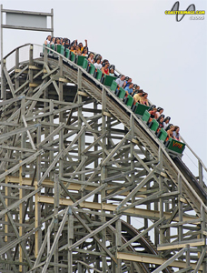

VIPER
<<< back to SIX FLAGS GREAT AMERICA
SPECS

Max Height: 100 ft.
Max Speed: 50 mph
Inversions: 0
Duration: 1 min. 45 sec.
Manufacturer: Six Flags
REIVEW
Viper is based off the old Coney Island coaster, but I’m sure it made some improvements. This ride features stomach raising drop after drop. Easily the most airtime I’ve experienced on a coaster, so you’re guaranteed a fun ride. The roughness of a wooden ride isn’t too overwhelming on this one unlike other wooden coasters. It’s long enough to be satisfying, but you always wish it had a few more turns to go before it stops.